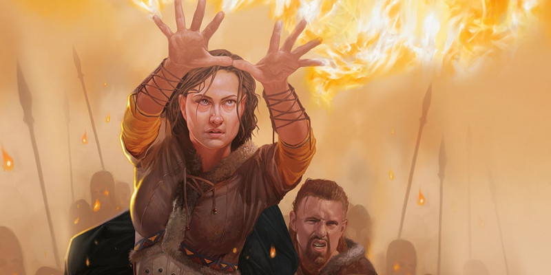

Traditions arcaniques
Au niveau 2, un magicien gagne la capacité Tradition arcanique. Voici de nouvelles options de tradition :
Maîtrise du savoir
La maîtrise du savoir est une tradition arcanique dédiée à la compréhension des mécanismes fondamentaux de la magie. Il s'agit de la plus théorique des traditions arcaniques. Une promesse de découvrir de nouvelles connaissances ou une opportunité de confirmer une théorie sont des motifs suffisants pour extirper les disciples de cette tradition hors de leur laboratoire, de leur académie ou de leur salle d'archives vers la poursuite d'une vie d'aventurier. Aussi nommé savants, les initiés de cette tradition sont des intellectuels qui apprécient la beauté et le mystère de l'application de la magie. Le résultat d'un sort les intéresse moins que la manière employée pour le créer. Certains savants regardent de haut ceux qui suivent une tradition basée sur une seule école de magie. Ils les perçoivent comme des provinciaux démunis de la sophistication requise à la maîtrise de la magie véritable. D'autres savants sont de généreux enseignants qui pallient à l'ignorance et au mensonge par la connaissance et la bonne humeur.
Maître du savoir
À partir du niveau 2, vous incarnez un savoir encyclopédique touchant à de nombreux domaines de connaissance. Votre bonus de maîtrise est doublé pour tout jet de caractéristique qui utilise les compétences Arcanes, Histoire, Nature ou Religion, tant que vous maîtrisez ces compétences. De plus, votre faculté d'analyse est telle que votre initiative en combat profite de votre agilité mentale plutôt que de votre agilité physique. Lorsque vous lancez votre initiative, le jet est d'Intelligence ou de Dextérité (au choix).
Sorts secrets
TRANSFORMER LES SORTS
Bien que la capacité Sorts secrets puisse offrir une grande polyvalence, ses effets peuvent être difficiles à percevoir pour les autres joueurs de la table. Si vous jouez un savant, prenez un moment pour décrire de quelle manière vous transformez le sort. Pensez à une modification qui vous distingue et qui vous rend particulièrement fier. Soyez créatif et faites que la partie soit plus amusante pour tous en jouant de manière inattendue la diversité des tours que seul votre personnage connaît. Par exemple, une boule de feu transformée de sorte qu'elle demande un jet de sauvegarde de Force pourrait prendre la forme d'un bloc de roc ardent qui se pulvérise au contact de la cible. Un sort de charme-personne qui demande un jet de sauvegarde de Constitution pourrait prendre la forme d'une drogue vaporeuse qui affecte l'humeur de la cible.
Au niveau 2, vous maîtrisez les premiers d'une série de secrets arcaniques révélés lors de vos études approfondies. Lorsque vous incantez un sort requérant un emplacement de sort dont les dégâts sont de type acide, feu, foudre, force, froid, nécrotique, radiant ou tonnerre, vous pouvez substituer ce type de dégâts par un autre de cette liste. Vous ne pouvez modifier qu'un seul type de dégâts par incantation. Vous remplacez un type d'énergie pour un autre en adaptant la formulation du sort au moment de l'incantation. Lorsque vous incantez un sort requérant un emplacement de sort et un jet de sauvegarde, vous pouvez changer la caractéristique du jet par une autre de votre choix. Une fois que vous avez changé un jet de sauvegarde de cette manière, vous devez attendre la fin d'un repos court ou long pour pouvoir le faire à nouveau.
Incantation alchimique
Au niveau 6, vous apprenez à renforcer vos sorts de manières variées. Lorsque vous incantez un sort requérant un emplacement de sort, vous pouvez utiliser un emplacement supplémentaire pour renforcer les effets de cette incantation en y intégrant judicieusement des parcelles de magie brute. L'effet dépend de l'emplacement de sort que vous avez choisi de sacrifier.
Un emplacement de sort de niveau 1 supplémentaire permet d'augmenter la force brute du sort. Si vous lancez des dés de dégâts grâce au sort que vous incantez, augmentez les dégâts de 2d10 dégâts de force pour chaque cible. Si le sort peut infliger des dégâts sur plus d'un tour, les dégâts de force supplémentaires s'ajoutent seulement lors du tour où le sort a été lancé.
Un emplacement de sort de niveau 2 supplémentaire permet d'augmenter la portée du sort. Si la portée du sort est d'au moins 9 mètres, elle passe à 1,5 kilomètre.
Un emplacement de sort de niveau 3 supplémentaire permet d'augmenter la puissance du sort. Augmentez le DD de sauvegarde du sort de 2.
Mémoire prodigieuse
Au niveau 10, vous avez atteint une maîtrise supérieure dans la préparation de vos sorts. Au prix d'une action bonus, vous pouvez remplacer un sort préparé par un autre sort de votre grimoire. Vous ne pouvez utiliser cette capacité que lorsque vous aurez terminé un repos court ou long.
Maître de la magie
Au niveau 14, votre connaissance de la magie vous permet de répliquer presque tous les sorts. Au prix d'une action bonus, vous vous remémorez la capacité d'incanter un sort de votre choix parmi toutes les listes de sorts, toutes classes confondues. Le sort doit être d'un niveau pour lequel vous disposez d'un emplacement de sort. Vous ne devez pas l'avoir déjà préparé et vous suivez les règles habituelles pour l'incantation, incluant l'utilisation d'un emplacement de sort. Si le sort n'est pas issu de la liste du magicien, il est tout de même considéré comme un sort de magicien au moment de l'incantation. La capacité de lancer ce sort se dissipe de votre esprit dès que vous l'avez lancé ou lorsque votre tour actuel prend fin. Vous ne pouvez utiliser cette capacité de nouveau avant d'avoir terminé un repos long.
Magie de guerre
Version officielle du Xanathar's Guide to Everything de cette sous-classe publiée initialement dans la rubrique Unearthed Arcana.
Plusieurs écoles de magie se spécialisent dans la formation des magiciens de guerre. La tradition de la magie de guerre mélange en effet des concepts d'évocation et d'abjuration. Elle enseigne des techniques qui renforcent les sorts d'un lanceur, tout en fournissant à un magicien des méthodes pour fortifier ses propres défenses. Les disciples de cette tradition sont connus sous le nom de mages de guerre. Ils voient leur magie à la fois comme une arme et une armure, une ressource supérieure à toute pièce d'acier. Les mages de guerre frappent rapidement dans la bataille et utilisent leurs sorts pour prendre le contrôle tactique d'une situation. Leurs sorts frappent durement et leurs compétences défensives déjouent les tentatives de contre-attaque de leurs adversaires.
Les mages de guerre sont également capables de retourner contre eux l'énergie magique d'autres lanceurs de sorts. Dans les grandes batailles, un mage de guerre travaille souvent avec des évocateurs, des abjurateurs et d'autres types de magiciens. Les évocateurs, en particulier, taquinent parfois les mages de guerre parce qu'ils partagent leur attention entre l'attaque et la défense. La réponse typique d'un mage de guerre est alors : « À quoi cela sert-il de pouvoir lancer une puissante boule de feu si je meurs avant de pouvoir la lancer ? ».
Déviation arcanique
Au niveau 2, vous avez appris à tisser votre magie pour vous fortifier contre les dommages. Lorsque vous êtes touché par une attaque ou que vous échouez à un jet de sauvegarde, vous pouvez utiliser votre réaction pour obtenir un bonus de +2 à votre CA contre cette attaque, ou un bonus de +4 à ce jet de sauvegarde. Une fois que vous avez utilisé cette capacité, vous ne pouvez plus lancer d'autres sorts que des sorts mineurs jusqu'à la fin de votre prochain tour.
Esprit tactique
À partir du niveau 2, votre capacité à évaluer rapidement les situations tactiques vous permet d'agir rapidement au combat. Vous gagnez un bonus à vos jets d'initiative égal à votre modificateur d'Intelligence.
Surtension
À partir du niveau 6, vous pouvez stocker en vous de l'énergie magique pour renforcer vos sorts de dégâts un peu plus tard. Dans sa forme stockée, cette énergie est appelée une surtension. Vous pouvez stocker un nombre maximum de surtensions égal à votre modificateur d'Intelligence (minimum un). Chaque fois que vous terminez un repos long, votre nombre de surtensions retombe à un. Et chaque fois que vous réussissez à mettre fin à un sort avec dissipation de la magie ou contresort, vous gagnez une surtension, en volant la magie du sort que vous avez déjoué. Si vous terminez un repos court sans surtension, vous gagnez une surtension.
Une fois par tour, lorsque vous infligez des blessures à une créature ou à un objet avec un sort de magicien, vous pouvez dépenser une surtension pour infliger à cette cible des dégâts de force supplémentaires égaux à la moitié de votre niveau de magicien.
Magie durable
À partir du niveau 10, la magie que vous canalisez vous aide à éviter les dommages. Tant que vous maintenez la concentration sur un sort, vous avez un bonus de +2 à la CA et à tous les jets de sauvegarde.
Voile de déviation
Au niveau 14, votre Déviation arcanique est imprégnée d'une magie mortelle. Lorsque vous utilisez votre capacité Déviation arcanique, une énergie magique vous enveloppe. Jusqu'à trois créatures de votre choix que vous pouvez voir dans un rayon de 9 mètres autour de vous prennent des dégâts de force égaux à la moitié de votre niveau de magicien.
École de l'invention
L'école de l'invention se targue d’avoir inventé toutes les autres écoles de magie, affirmation que les autres magiciens trouvent absurde. Les magiciens de cette école tentent de repousser les limites de la magie. Ils étirent les lois de la puissance arcanique et s’efforcent de percer les mystères du multivers. Les membres de cette école croient que l’innovation n’existe que par l’expérimentation. Ils ont la réputation d’agir d’abord et de penser ensuite. La plupart des magiciens sont des érudits qui ont atteint une grande maîtrise de leur art grâce à une étude minutieuse, une pratique rigoureuse et d’innombrables heures d’entraînement. Ces magiciens sont connus pour lancer plusieurs sorts simultanément et observer ensuite ce qu’il s’est passé. La plupart des adeptes de cette tradition arcanique sont des gnomes ou des alchimistes, fiers de l’armure magique qu’ils portent. Celle-ci ne leur apporte pas seulement une protection supplémentaire, mais leur permet aussi de canaliser la magie d’une manière inattendue. Les inventeurs sont perçus comme de grands savants, mais les autres magiciens les voient plutôt comme des lunatiques.
Outils de l'inventeur
Au niveau 2, vous gagnez la maîtrise de deux outils de votre choix.
Armure arcanomécanique
L’innovation est une pratique dangereuse, du moins lorsqu’elle est pratiquée à la manière des inventeurs. Afin de vous protéger des risques que cela entraîne, vous avez développé une armure arcanique. Au niveau 2, vous gagnez la maîtrise des armures légères ainsi qu’une armure arcanomécanique qui a la particularité de ne pouvoir être liée qu'avec vous. Tant que vous êtes lié à l'armure et que vous la portez, elle vous confère une résistance aux dégâts de force. C’est une armure légère conférant une CA de 12 + votre modificateur de Dextérité. Elle pèse 4 kg. Vous pouvez créer une nouvelle armure après avoir terminé un repos long en touchant une armure de cuir clouté non magique, ce qui lui confère des pouvoirs magiques. L’ancienne armure arcanomécanique perd alors son énergie magique.
Magie insouciante
À partir du niveau 2, vous pouvez tenter de lancer un sort que vous n’avez pas préparé. Lorsque vous utilisez cette capacité, vous utilisez une action et choisissez une des options suivantes :
- Utiliser la table des sorts mineurs et lancez le sort correspondant.
- Dépenser un emplacement de sort et utiliser deux fois la table du niveau de cet emplacement (la table du niveau 5 si le sort est de niveau 6 ou supérieur). Vous choisissez ensuite un des deux résultats et lancez le sort correspondant.
Le sort lancé de cette manière est considéré comme un sort de magicien, qu'il soit ou non un sort de magicien.
| d10 | Sort mineur |
| 1 | Aspersion d’acide |
| 2 | Contact glacial |
| 3 | Trait de feu |
| 4 | Lumière |
| 5 | Bouffée de poison |
| 6 | Rayon de froid |
| 7 | Poigne électrique |
| 8 | Flamme sacrée |
| 9 | Fouet épineux |
| 10 | Lancer 2d10 et lancer les deux sorts. Un nouveau résultat de 10 vous empêche de lancer un sort lors de cette action. |
| d10 | Sort de niveau 1 |
| 1 | Mains brûlantes |
| 2 | Orbe chromatique |
| 3 | Couleurs dansantes |
| 4 | Lueurs féériques |
| 5 | Simulacre de vie |
| 6 | Nappe de brouillard |
| 7 | Saut |
| 8 | Projectile magique |
| 9 | Vague tonnante |
| 10 | Lancer 2d10 et lancer les deux sorts. Un nouveau résultat de 10 vous empêche de lancer un sort lors de cette action. |
| d10 | Sort de niveau 2 |
| 1 | Flou |
| 2 | Ténèbres |
| 3 | Agrandissement/Rapetissement |
| 4 | Bourrasque |
| 5 | Invisibilité |
| 6 | Lévitation |
| 7 | Flèche acide de Melf |
| 8 | Rayon ardent |
| 9 | Fracassement |
| 10 | Lancer 2d10 et lancer les deux sorts. Un nouveau résultat de 10 vous empêche de lancer un sort lors de cette action. |
| d10 | Sort de niveau 3 |
| 1 | Clignotement |
| 2 | Peur |
| 3 | Mort simulée |
| 4 | Boule de feu |
| 5 | Vol |
| 6 | Forme gazeuse |
| 7 | Éclair |
| 8 | Tempête de neige |
| 9 | Nuage nauséabond |
| 10 | Lancer 2d10 et lancer les deux sorts. Un nouveau résultat de 10 vous empêche de lancer un sort lors de cette action. |
| d10 | Sort de niveau 4 |
| 1 | Flétrissement |
| 2 | Confusion |
| 3 | Tentacules noirs d’Evard |
| 4 | Bouclier de feu |
| 5 | Invisibilité supérieure |
| 6 | Tempête de grêle |
| 7 | Assassin imaginaire |
| 8 | Peau de pierre |
| 9 | Mur de feu |
| 10 | Lancer 2d10 et lancer les deux sorts. Un nouveau résultat de 10 vous empêche de lancer un sort lors de cette action. |
| d10 | Sort de niveau 5 |
| 1 | Brume mortelle |
| 2 | Cône de froid |
| 3 | Vague destructrice |
| 4 | Colonne de flamme |
| 5 | Immobilisation de monstre |
| 6 | Fléau d’insectes |
| 7 | Soins de groupe |
| 8 | Mur de force |
| 9 | Mur de pierre |
| 10 | Lancer 2d10 et lancer les deux sorts. Un nouveau résultat de 10 vous empêche de lancer un sort lors de cette action. |
Alchimie magique
Au niveau 6, vous apprenez à canaliser la magie à travers votre armure arcanomécanique pour accroître les sorts de différentes manières. Lorsque vous lancez un sort en portant votre armure magique et en étant lié à elle, vous pouvez dépenser un emplacement de sort de niveau 1 ou 2 supplémentaire afin de modifier le sort choisi. L’effet dépend de l’emplacement choisi.
- Emplacement de niveau 1 : l’énergie du sort peut être manipulée. Lorsque vous lancez un sort qui inflige des dégâts d’acide, de froid, de feu, de foudre ou de tonnerre, vous pouvez substituer un de ces types de dégâts par un autre de cette liste.
- Emplacement de sort de niveau 2 : la force brute du sort est augmentée. Si le sort inflige des dégâts, augmentez ceux-ci de 2d10 dégâts de force contre une des cibles du sort (selon votre choix) lors de ce tour.
Inspiration prodigieuse
Au niveau 10, vous avez atteint une grande maîtrise dans la préparation des sorts. Vous pouvez utiliser une action bonus pour remplacer un des sorts préparés par un de ceux présents dans votre grimoire. Vous ne pouvez pas utiliser cette capacité à nouveau avant d’avoir terminé un repos court ou long.
Maîtrise du chaos
Au niveau 14, votre capacité à improviser avec la magie gagne en puissance. Lorsque vous utilisez votre capacité Magie insouciante, vous pouvez utiliser la table correspondant au niveau supérieur à l’emplacement de sort que vous souhaitez utiliser, sauf dans le cas des sorts mineurs.
Onomancie
LES VRAIS NOMS
L'onomancie est une méthode d'incantation de sorts qui utilise le vrai nom d'une créature pour améliorer les effets d'un sort. Un vrai nom est le nom par lequel une créature consciente d'elle-même s'identifie. Ce nom peut être celui qui lui a été donné à la naissance, ou celui qu'une personne a choisi ou gagné plus tard dans sa vie. Quelle que soit l'origine d'un nom, le moyen le plus simple de connaître son vrai nom est de penser sincèrement à soi-même puis de se dire : « Mon nom est …». Votre vrai nom est celui qui termine la phrase.
Vous pouvez essayer de cacher votre vrai nom en utilisant un pseudonyme, mais vous devez être prudent pour ne pas trop utiliser ce faux nom. Si un faux nom devient la meilleure expression de qui vous êtes, il devient votre vrai nom. Changer son vrai nom n'est jamais un choix rapide, c'est quelque chose qui se produit au fil du temps puisqu'un nom devient la vérité de la créature.
De manière rapide, une créature a un vrai nom si elle comprend au moins une langue ou a un alignement.
Les praticiens de la magie connaissent bien le pouvoir des noms, mais les magiciens qui suivent la tradition de l'onomancie utilisent leur magie pour manipuler les mots qui englobent l'existence. Les onomanciens étendent leur étude au langage, à la recherche des fils de signification magique qui tissent les noms. Une chose qui porte un nom est un élément particulier du multivers, distinct de toutes les autres créations tout autour. Cette distinction crée un pouvoir que les onomanciens cherchent à exploiter. En prononçant le vrai nom d'une cible, les sorts du magicien se glissent dans les fentes des défenses de celle-ci, s'adaptant à sa nature essentielle grâce à la puissance de son nom. Pour se protéger, les magiciens qui suivent cette tradition cachent souvent leur vrai nom, généralement en adoptant des sobriquets ou des pseudonymes.
Maîtrises supplémentaires
Au niveau 2, vous apprenez une langue de votre choix et maîtrisez le matériel de calligraphe.
Extraction du nom
À partir du niveau 2, vous pouvez magiquement obliger une créature à révéler son vrai nom. Par une action bonus, vous ciblez une créature que vous pouvez voir à 18 mètres ou moins de vous. La cible doit effectuer un jet de sauvegarde de Sagesse contre le DD de vos sorts. En cas de réussite, vous vous rendez compte que la magie a échoué et ne pouvez plus utiliser cette capacité sur cette cible. En cas d'échec, vous charmez la cible jusqu'à la fin de votre prochain tour, et vous apprenez mentalement son nom ou le fait qu'elle n'a pas de nom. Vous pouvez utiliser cette capacité un nombre de fois égal à votre modificateur d'Intelligence (minimum une fois) et récupérez toutes les utilisations lorsque vous terminez un repos long.
Nom fatidique
À partir du niveau 2, vous pouvez utiliser la magie pour aider ou entraver des créatures grâce au pouvoir de leurs vrais noms, et même utiliser ces noms comme une ancre pour affecter d'autres créatures autour d'elles. Vous considérez les sorts fléau et bénédiction comme des sorts de magicien et les ajoutez à votre grimoire. Vous les avez toujours préparés mais ils ne comptent pas dans le nombre de sorts que vous pouvez préparer. Vous pouvez lancer l'un ou l'autre de ces sorts sans utiliser un emplacement de sort si vous prononcez le vrai nom d'une cible du sort lors de son incantation. Vous pouvez lancer les sorts de cette manière un nombre de fois égal à votre modificateur d'Intelligence (minimum une fois), et récupérez toutes les utilisations lorsque vous terminez un repos long.
Résonances
Au niveau 6, vous apprenez des mots de pouvoir appelés des résonances, lesquelles vous permettent de personnaliser vos sorts en utilisant le vrai nom d'une cible.
Résonances connues. Lorsque vous gagnez cette capacité, vous apprenez deux résonances de votre choix (voir ci-dessous). Chaque fois que vous gagnez un niveau dans cette classe, vous pouvez remplacer une résonance connue par une autre.
Utiliser une résonance. Vous pouvez utiliser une résonance si vous lancez un sort de magicien en utilisant un emplacement de sort et prononcez le vrai nom d'une créature ciblée par le sort. Dire le nom fait partie de l'incantation du sort. Vous pouvez utiliser Résonances un nombre de fois égal à la moitié de votre niveau de magicien (arrondi à l'inférieur) et récupérez toutes les utilisations lorsque vous terminez un repos long.
Options de résonances. Voici les options de Résonances :
- Absorption. Lorsque vous lancez un sort qui inflige des dégâts à la cible nommée, vous gagnez 3d6 points de vie temporaires. Le nombre de points de vie temporaires que vous gagnez augmente de 1d6 lorsque vous atteignez le niveau 10 (4d6) et le niveau 14 (5d6) dans cette classe.
- Dévastation. Si le sort requiert que la créature nommée effectue un jet de sauvegarde, cette créature a un désavantage au premier jet de sauvegarde effectué contre le sort.
- Dissolution. La première fois que la créature nommée subit des dégâts du sort, cette créature subit 2d8 dégâts de force supplémentaires. Les dégâts de force supplémentaires augmentent de 1d8 lorsque vous atteignez le niveau 10 (3d8) et le niveau 14 (4d8) dans cette classe.
- Annulation. Si la cible nommée est affectée par d'autres sorts, vous découvrez ce que sont ces sorts et pouvez tenter de mettre fin à l'un d'eux en réussissant un jet d'Intelligence contre un DD égal à 10 + le niveau du sort choisi.
- Marionnettes. La première fois que la créature nommée subit des dégâts du sort, vous pouvez faire tomber la créature ou la déplacer jusqu'à 3 mètres, vers vous ou de vous.
- Sympathie. Si la créature nommée est à portée du sort, vous pouvez la cibler avec le sort même si vous ne pouvez pas voir la créature ou si elle possède un abri total contre le sort.
Prononciation inexorable
Au niveau 10, vous apprenez deux nouvelles résonances de votre choix de la capacité Résonances.
Nom implacable
À partir du niveau 14, vous avez appris à contourner les défenses d'une créature nommée contre certains types de dégâts. Lorsque vous lancez un sort qui inflige des dégâts à une créature en utilisant son vrai nom lors de l'incantation, vous pouvez faire en sorte que le sort inflige des dégâts de force ou psychiques au lieu du type de dégâts normal du sort.
Ordre des scribes
Cette sous-classe se propose de remplacer la sous-classe d'artificier d'archiviste, qui n'a pas atteint le seuil de satisfaction attendu par WotC lors d'un sondage.
La magie des livres, ainsi est appelée l’art des magiciens par de nombreux lanceurs de sorts. Le nom est approprié, au vu de la quantité de temps que les magiciens passent le nez dans leurs livres de sorts, à composer des théories sur la nature de la magie et à explorer les coins et recoins de bibliothèques. Il est rare de croiser un magicien voyager sans voir livres et parchemins déborder de son sac, et un magicien irait très loin pour pouvoir sonder et archiver des savoirs anciens. Parmi les magiciens, l’ordre des scribes est le plus bouquineur. Il prend de nombreuses formes selon les différents mondes, mais sa mission principale est toujours la même : enregistrer les découvertes magiques dans des livres et parchemins afin que la magie puisse prospérer. Et quand tous les magiciens tiennent à leurs grimoires, un scribe de l’ordre des scribes se dédie à éveiller magiquement son livre, qui devient un compagnon de confiance. Tous les magiciens étudient leurs grimoires, mais un scribe mage parle au sien !
Plume magique
Capacité d’ordre des scribes de niveau 2
Au prix d’une action bonus, vous pouvez créer magiquement une plume de taille TP dans votre main libre. La plume magique a les propriétés suivantes :
- La plume ne requiert pas d’encre. Quand vous écrivez avec, elle produit une encre de la couleur de votre choix sur la surface sur laquelle vous écrivez.
- L’or et le temps que vous devez dépenser pour copier un sort dans votre grimoire sont réduits de moitié si vous utilisez cette plume pour la transcription.
- Vous pouvez effacer tout ce que vous écrivez avec la plume si vous la balayez sur le texte avec une action bonus, à condition que le texte soit à 1,50 m ou moins de vous.
La plume disparaît si vous en créez une nouvelle ou si vous mourez.
Grimoire éveillé
Capacité d’ordre des scribes de niveau 2
À l’aide d’encres spéciales et d’anciennes incantations transmises au sein de votre ordre, vous avez éveillé une forme de conscience arcanique dans votre grimoire. Tant que vous tenez le grimoire, vous avez les avantages suivants :
- Vous pouvez utiliser le livre comme un focaliseur de sorts pour vos sorts de magicien.
- Quand vous lancez un sort de magicien avec un emplacement de sort, vous pouvez remplacer temporairement son type de dégât par celui d’un autre sort dans votre grimoire, le grimoire altérant magiquement la formule du sort pour ce lancer.
- Quand vous lancez un sort de magicien en tant que rituel, vous pouvez utiliser le temps d’incantation normal au lieu d’ajouter 10 minutes. Une fois que vous avez utilisé cet avantage, vous ne pouvez plus l’utiliser avant d'avoir terminé un repos long.
Si nécessaire, vous pouvez remplacer le grimoire pendant un repos court en utilisant votre Plume magique pour écrire des symboles arcaniques sur un livre vierge ou un grimoire magique avec lequel vous êtes lié. À la fin du repos, la conscience de votre grimoire est invoquée dans le nouveau livre et le transforme en votre nouveau grimoire, avec tous les sorts qui vont avec. Si l'ancien grimoire existe encore quelque part, tous les sorts disparaissent de ses pages.
Maître scribe
Capacité d’ordre des scribes de niveau 6
Quand vous terminez un repos long, vous pouvez créer un parchemin magique en touchant un papier vierge ou un parchemin avec votre Plume magique, copiant un sort de votre Grimoire éveillé dessus. Le grimoire doit être à 1,50 m ou moins de vous lorsque vous faites le parchemin. Le sort choisi doit être de niveau 1 ou 2 et doit avoir un temps d’incantation de 1 action. Une fois sur le parchemin, le pouvoir du sort est renforcé, il est considéré un niveau au-dessus du niveau normal. Vous pouvez lancer le sort depuis le parchemin en le lisant au prix d'une action. Le parchemin est inintelligible pour quiconque autre que vous, et le sort disparaît du parchemin quand vous le lancez ou quand vous terminez un repos long.
Vous maîtrisez aussi la création de parchemins de sorts, tel que décrit dans le Guide du Maître. L’or et le temps nécessaires pour fabriquer un parchemin sont réduits de moitié si vous utilisez votre Plume magique.
Manifestation d'esprit
Capacité d’ordre des scribes de niveau 10
Vous pouvez maintenant évoquer l’esprit de votre Grimoire éveillé. Par une action bonus, tant que le livre est sur vous, vous pouvez manifester l’esprit sous la forme d’un artificiel spectral de taille TP, en lévitation dans un espace inoccupé de votre choix dans un rayon de 18 m autour de vous. Cette présence est intangible, n’occupe pas d’espace, et génère une lumière faible dans un rayon de 3 m. Elle ressemble à un livre fantomatique, une cascade de lettres, ou à un savant du passé (selon votre choix). L’esprit spectral a un nombre de points de vie égal à votre niveau de magicien plus votre modificateur d’Intelligence, et il utilise votre Classe d’Armure et vos modificateurs de jets de sauvegarde. Tant que l’esprit spectral est présent, il peut voir et entendre, et a une vision dans le noir jusqu'à 18 m. Par une action, vous pouvez entendre et voir en utilisant les sens de l’esprit à la place des vôtres, et ce jusqu'à la fin de votre concentration (comme si vous vous concentriez sur un sort).
Quand vous lancez un sort de magicien à votre tour, vous pouvez le lancer comme si vous étiez à l’emplacement de l’esprit spectral et en utilisant ses sens. Vous pouvez utiliser cette capacité un nombre de fois par jour égal à votre bonus de maîtrise, et vous regagnez toutes les utilisations quand vous terminez un repos long. Par une action bonus, vous pouvez amener l’esprit spectral à se déplacer jusqu'à 18 m vers un espace inoccupé que vous ou l’esprit pouvez voir. Il peut passer à travers les créatures mais pas à travers les objets. L'esprit spectral disparaît s’il se trouve à plus de 90 m de vous, s’il tombe à 0 point de vie, si vous mourez, ou si vous le faîtes disparaître par une action bonus.
Ne faire qu’un avec les mots
Capacité d’ordre des scribes de niveau 14
Votre connexion avec votre Grimoire éveillé est devenue si profonde que votre âme s’est liée à lui. Tant que vous tenez le grimoire et que son esprit est présent, vous pouvez utiliser une action pour vous téléporter tous les deux, échangeant vos positions. Vous pouvez vous téléporter de cette manière un nombre de fois égal à votre bonus de maîtrise, et vous regagnez toutes les utilisations quand vous terminez un repos long. De plus, si vous mourez mais qu’il reste au moins un sort présent dans votre Grimoire éveillé, vous pouvez revenir à la vie une minute après à une distance maximale de 1,50 m du livre. Vous revenez à la vie avec 1 point de vie. Lancez ensuite 3d6. Le grimoire perd les sorts de votre choix ayant un niveau de sort combiné égal ou supérieur au résultat obtenu. Par exemple, si le résultat obtenu est de 9, les sorts qui disparaissent du grimoire ont un niveau de sort combiné d’au moins 9, ce qui pourrait vouloir dire un sort de niveau 9, trois sorts de niveau 3, ou n’importe quelle autre combinaison. Après cela, vous ne pouvez plus lancer les sorts perdus, même si vous les trouvez sur un parchemin ou dans un autre grimoire. La seule manière de regagner la capacité de lancer un des sorts perdus est d’utiliser le sort souhait, qui peut restaurer un sort au grimoire par utilisation.

Écrit par Mike Mearls et Jeremy Crawford, traduit par Puncho, blueace, Zoran999 et Dorian